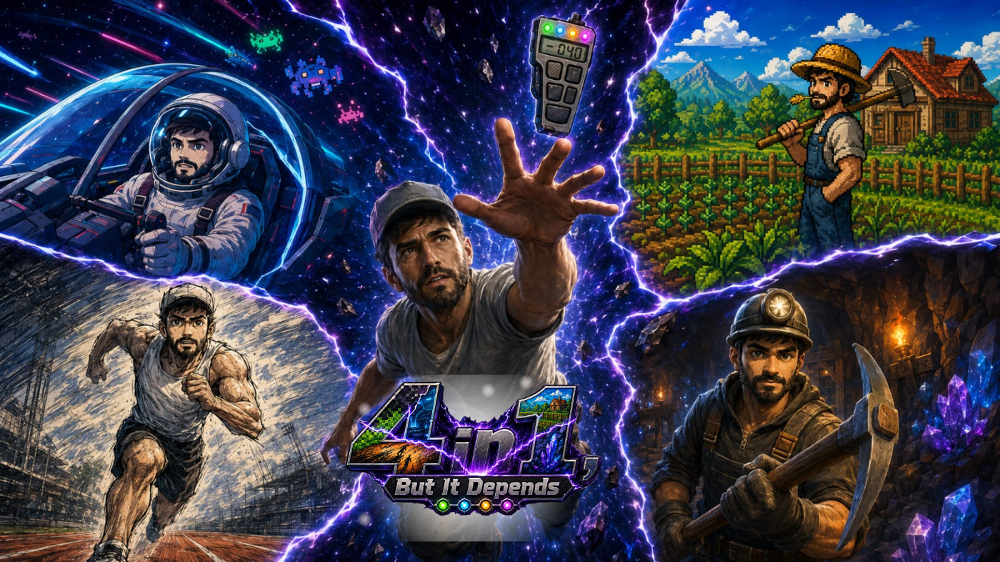

JOGO 2D
IDLE
CLICKER
4in1, but it depends
Após quebrar um dispositivo misterioso, o protagonista é fragmentado em quatro realidades diferentes.
Cada uma possui sua própria dinâmica, mas tudo o que acontece em uma realidade influencia as outras.
 JOGO 3D
HACK AND SLASH
JOGO 3D
HACK AND SLASH
Espadachins Lendários
Inspirado nos jogos de ação da era do PlayStation 2.
Uma guerreira enfrenta hordas de monstros que, na verdade, representam demônios dentro de sua própria mente,
enquanto trava silenciosamente uma batalha contra a depressão.